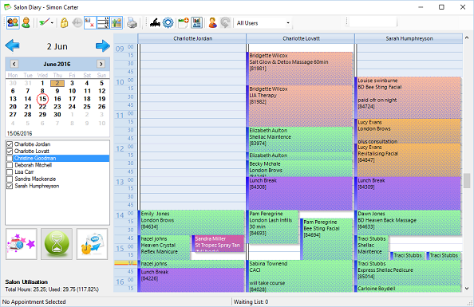

The diary is a complete solution for managing bookings within the salon.
 The diary can be activated by clicking the icon (left) from the main POS
screen. This will load the diary to today’s date.
The diary can be activated by clicking the icon (left) from the main POS
screen. This will load the diary to today’s date.

The diary itself can be broken down into three parts, at the top is a toolbar containing options
to change how the diary looks, below and on the left hand side is the date selector, current
staff list for the site and extra options below. The main part of the diary shows the
appointments for staff members.
Staff Selection
When in team view, you can choose which staff members are shown within the diary by
putting a tick next to the staff member’s name. See Advanced Settings to permanently hide a
staff member.
Salon Utilisation
Salon utilisation provides a quick overview on the current salon view and availability.